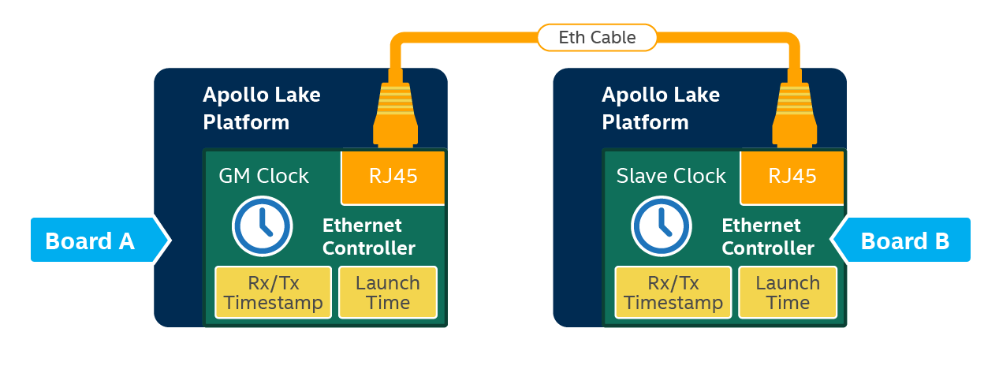
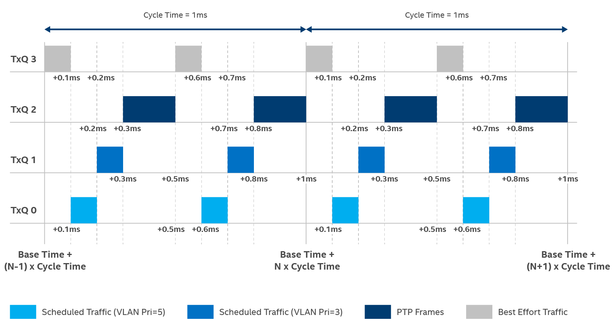

You can run this demo with or without an IEEE802.1Qbv capable switch. The switch is required to connect other Ethernet-capable devices to the same network. Depending on your environment, select Option 1 (without a switch) or Option 2 (with a switch) to run the demo.
Note
While setting up the demo, consider performing CPU Clock Optimization, if appropriate for your environment.Option 1: Direct Connection without a Switch
| Units needed | Equipment Specifications |
|---|---|
| 2 | Apollo Lake-I-based platforms, such as Leaf Hill CRB board |
| 2 | Intel Ethernet Controllers I210 |
| 1 | CAT-5E Ethernet Cable |
Note
For information on using other processors or boards, refer to the Validated Configurations.The figure below shows the hardware set up for the demo without a switch. Each Apollo Lake-I-based platform contains an Intel Ethernet Controller I210. For the purpose of this demo, assign these two platforms as:
| Board A | The platform on which the PTP clock of the Intel Ethernet Controller I210 acts as the grandmaster clock. |
| Board B | The platform on which the PTP clock of the Intel Ethernet Controller I210 acts as the slave clock. |

To set up the demo using Option 1, follow these steps:
- Connect one end of a CAT-5E Ethernet cable to the RJ45 connector of Board A.
Connect the other end of the cable to the RJ45 connector of Board B as shown in Figure 1.
- Power on the two boards.
Option 2: Connection with a Switch
| Units needed | Equipment Specifications |
|---|---|
| 2 | Apollo Lake-I-based platforms, such as Leaf Hill CRB board |
| 2 | Intel Ethernet Controllers I210 |
| 2 | CAT-5E Ethernet Cable |
| 1 | IEEE802.1Qbv capable switch with (2) RJ45 ports available |
Note
For information on using other processors or boards, refer to Validated Configurations.The figure below shows the hardware set up for the demo using a connection with a switch.
For the purpose of this demo, assign these two platforms as:
| Board A | The platform on which the PTP clock of the Intel Ethernet Controller I210 acts as the grandmaster clock. |
| Board B | The platform on which the PTP clock of the Intel Ethernet Controller I210 acts as the slave clock. |

To set up the demo using Option 2, follow these steps:
- Connect one end of a CAT-5E Ethernet cable to the RJ45 Port of Board A.
- Connect the other end of the cable to the RJ45 Port of the IEEE 802.1Qbv-capable switch.
- Connect one end of the second CAT-5E Ethernet cable to Board B.
- Connect the other end of the cable to the RJ45 Port of the IEEE 802.1Qbv-capable switch.
- Power on the two boards and the switch.
- Configure the IEEE 802.1Qbv-capable switch as described below.
IEEE 802.1Qbv-capable Switch Configuration (Option 2 Only)
To ensure end-to-end transmission latency for scheduled traffic is well protected, set the IEEE 802.1Qbv-capable switch using the same transmission schedule used in Board A.

Based on the transmission schedule above, use the software interface provided by the chosen IEEE 802.1Qbv switch to program the GCL of the egress port as shown below. The cycle time is 1ms for this demo. The base time needs to be aligned with base time used in Board A. In this case, configure it by using the base time (stored in the base_time file) that is generated from the sample-app-taprio.
The transmission gate open and close time is relative to base time.
| # Open Tx Gate 0: [+0.1ms to +0.2ms] and [+0.6ms to +0.7ms]
# Open Tx Gate 1: [+0.2ms to +0.3ms] and [+0.7ms to +0.8ms] # Open Tx Gate 2: [+0.3ms to +0.5ms] and [+0.8ms to +1.0ms] # Open Tx Gate 3: [+0.0ms to +0.1ms] and [+0.5ms to +0.6ms] |
To ease the programming of above transmission schedule, the GCL programming sequence based on the definition in IEEE 802.1Qbv is:
| # SetGates 0x8 100000
# SetGates 0x1 100000 # SetGates 0x2 100000 # SetGates 0x4 200000 # SetGates 0x8 100000 # SetGates 0x1 100000 # SetGates 0x2 100000 # SetGates 0x4 200000 |